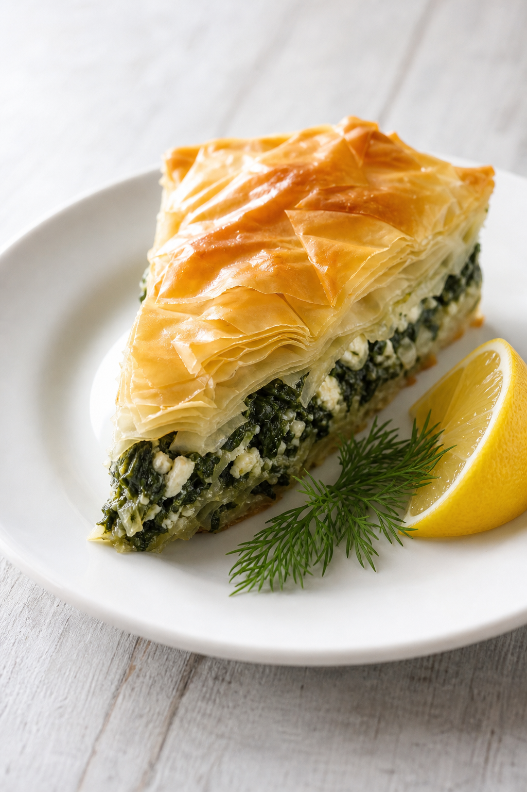
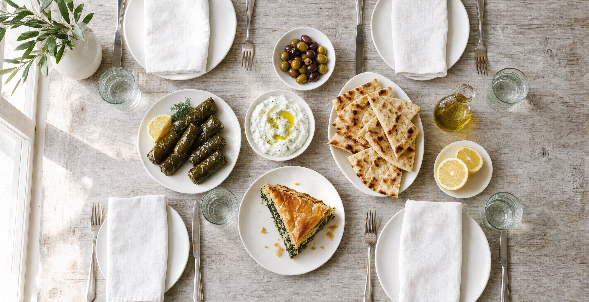
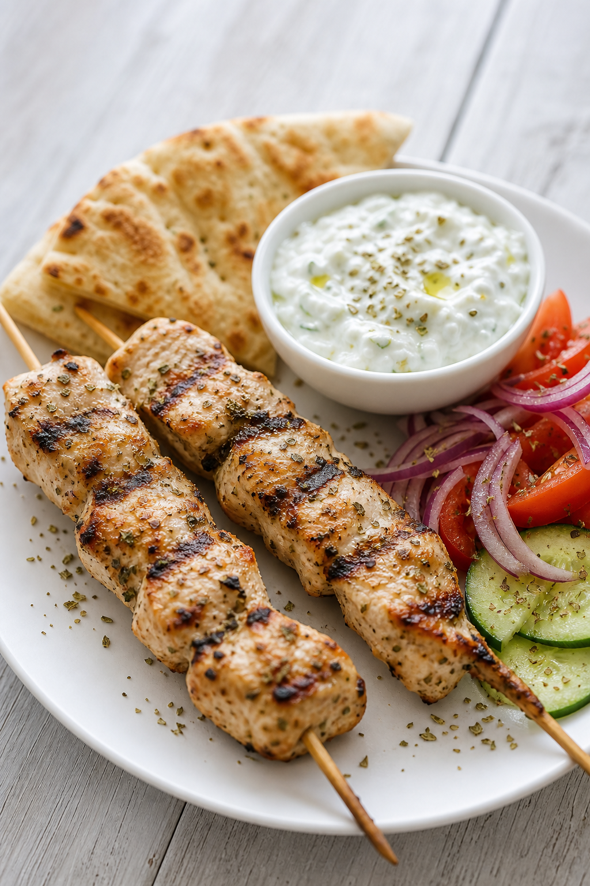
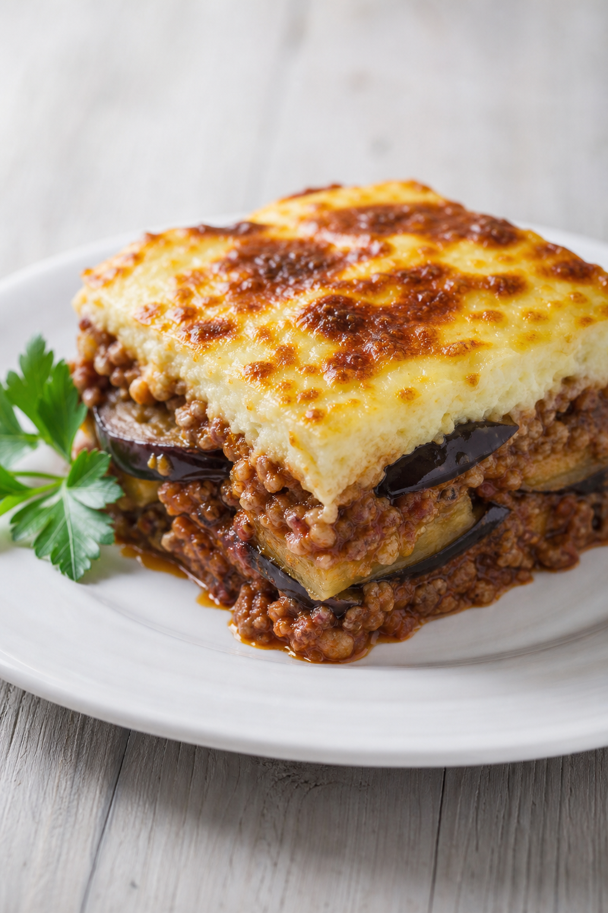
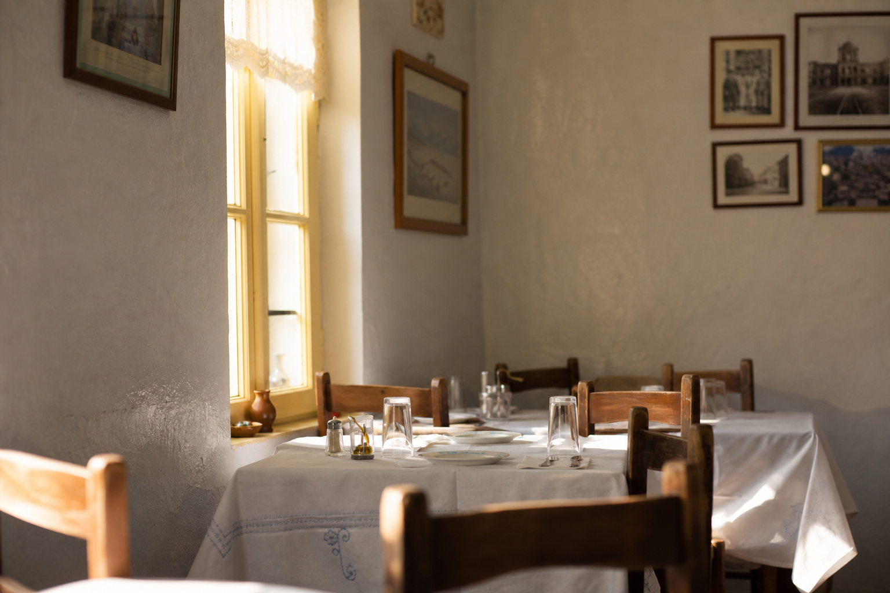

Spanakopita
Spinach and feta folded into phyllo and baked until the layers shatter.

Ranked #1 of all Manassas restaurants on Tripadvisor · Travelers' Choice · 4.7 from 651 reviews
Family recipes, made the way they were handed down. The full menu runs from Greek classics through pasta, steaks and seafood — but if it is your first time, start here.

Spinach and feta folded into phyllo and baked until the layers shatter.

Skewers off the grill with warm pita, tzatziki, and a plate of salad alongside.

Aubergine and spiced meat under a béchamel top, browned in the oven.
Our mission is simple: to honour our Greek heritage, to share our family recipes with everyone who walks through our doors, and to make our food feel like home.
It begins with the food itself. Olive oil is a staple of the Mediterranean table and it runs through nearly everything we cook. Fifteen years on Center Street, and that has not changed.
#1 restaurant in Manassas
Tripadvisor Travelers' Choice · 4.7 from 651 reviews · verified September 2026

Hours
First Fridays
Center Street closes for First Friday from February through November, 6–9pm. We are right on the block — come for dinner before you walk it, or after.
An unsolicited design concept for Katerina's Greek Cuisine, prepared by Ohtari Labs. This is not their website.